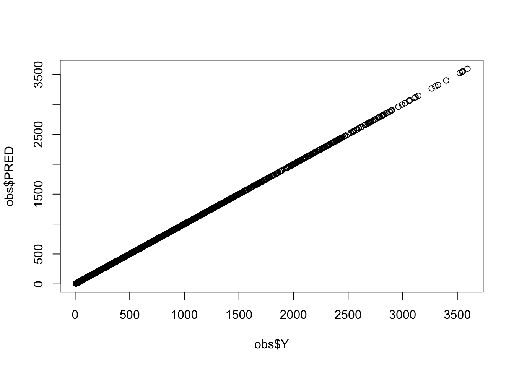

library(mrgsolve)
library(dplyr)
library(tidyr)
library(data.table)
library(here)
options(bbr.verbose = TRUE, mrgsolve.project = here("model/pk"))1 Introduction
We frequently use mrgsolve to simulate from models estimated in NONMEM. This requires translation of the model from the NONMEM control stream into mrgsolve format.
There is a straightforward way to confirm correct coding of the mrgsolve model once the NONMEM model is in hand. This blog post will show you how to do that.
Expand view packages and options
2 Data
The validation of the mrgsolve model coding is driven by PRED which was tabled when the NONMEM run finished. This is the standard against which we will evaluate the mrgsolve model.
tab <- fread(here("model/pk/106/106.tab"), skip = 1, na.strings = '.')
head(tab) NUM IPRED NPDE CWRES DV PRED RES WRES
1: 1 0.00000 0.00000000 0.00000000 0.000 0.00000 0.0000000 0.0000000
2: 2 68.53183 -0.53401190 -0.51213920 61.005 60.58323 0.4217692 -0.5334058
3: 3 90.81217 0.27931900 0.12607810 90.976 78.54761 12.4283900 0.1424843
4: 4 97.27639 1.55477400 1.44380800 122.210 83.03988 39.1701200 1.6307490
5: 5 96.73790 1.88079400 1.69356600 126.090 82.22198 43.8680200 1.9132660
6: 6 88.70574 0.06689328 -0.05272759 84.682 75.48693 9.1950690 -0.0940618We want to make sure we have the same input data for the validation that we had for the model estimation. So we will read in the analysis data
nmdata <- fread(here("data/derived/analysis3.csv"), na.strings = '.')
nmdata <- select(nmdata, -DV)and then merge it on by a row counter called NUM which uniquely connects output rows to input rows
data <- left_join(tab, nmdata, by = "NUM")Note that in the join, tab is on the left so that the resulting data drops the records from nmdata that didn’t make it into the analysis.
Now, we have the analysis data set with PRED (from NONMEM) as a column
select(data, ID, NUM, TIME, EVID, AMT, CMT, DV, PRED) ID NUM TIME EVID AMT CMT DV PRED
1: 1 1 0.00 1 5 1 0.000 0.00000
2: 1 2 0.61 0 NA 2 61.005 60.58323
3: 1 3 1.15 0 NA 2 90.976 78.54761
4: 1 4 1.73 0 NA 2 122.210 83.03988
5: 1 5 2.15 0 NA 2 126.090 82.22198
---
4288: 160 4356 60.09 0 NA 2 99.059 39.55937
4289: 160 4357 72.03 0 NA 2 64.482 33.24345
4290: 160 4358 84.18 0 NA 2 77.621 27.89484
4291: 160 4359 96.02 0 NA 2 33.907 23.52130
4292: 160 4360 120.09 0 NA 2 36.249 16.63423This data set contains 3100+ concentrations
count(data, EVID) EVID n
1: 0 3142
2: 1 11502.1 bbr::nm_join
If you are using bbr as your modeling platform, you can get the same data set with a one-liner call to bbr::nm_join()
data <- bbr::nm_join(here("model/pk/106"))3 Model
The model is a standard two-compartment PK model from run 106; we’ve already coded the model here
mod <- mread_cache("106.txt")
Expand to see the model code
[ prob ]
106-104 + COV-effects(CRCL, AGE) on CL
[ pkmodel ] cmt = "GUT,CENT,PERIPH", depot = TRUE
[ param ]
WT = 70
EGFR = 90
ALB = 4.5
AGE = 35
[ nmxml ]
path = "106/106.xml"
root = "cppfile"
[ main ]
double V2WT = log(WT/70.0);
double CLWT = log(WT/70.0)*0.75;
double CLEGFR = log(EGFR/90.0)*THETA6;
double CLAGE = log(AGE/35.0)*THETA7;
double V3WT = log(WT/70.0);
double QWT = log(WT/70.0)*0.75;
double CLALB = log(ALB/4.5)*THETA8;
double KA = exp(THETA1+ETA(1));
double V2 = exp(THETA2+V2WT+ETA(2));
double CL = exp(THETA3+CLWT+CLEGFR+CLAGE+CLALB+ETA(3));
double V3 = exp(THETA4+V3WT);
double Q = exp(THETA5+QWT);
double S2 = V2/1000.0; //; dose in mcg, conc in mcg/mL
[ table ]
double IPRED = CENT/S2;
capture Y = IPRED * (1+EPS(1));4 Simulate
Now, simulate from the mrgsolve model
out <- mrgsim(zero_re(mod), data, carry_out = "PRED,EVID", digits = 7)
head(out) ID TIME EVID PRED GUT CENT PERIPH Y
1 1 0.00 1 0.00000 5.00000000 0.000000 0.00000000 0.00000
2 1 0.61 0 60.58323 1.93352200 2.935854 0.06481082 60.58323
3 1 1.15 0 78.54761 0.83383100 3.806404 0.17738390 78.54761
4 1 1.73 0 83.03988 0.33787020 4.024099 0.31227170 83.03988
5 1 2.15 0 82.22198 0.17565080 3.984464 0.40873200 82.22198
6 1 3.19 0 75.48693 0.03476685 3.658084 0.62658760 75.48693Some important points to notice about this simulation
- We wrap the model object in
zero_re(); this drops all the random effects from the simulation so that simulated concentrations are equivalent toPREDregardless if we are looking atDV(orY) orIPRED - We bring
PREDandEVIDinto the simulated output; we needPREDto to compare against andEVIDis needed so we can filter out dosing records - We deliberately set the number of significant
digitsin the simulated result; this is really important if you want a sensitive validation index
5 Compare
Keeping only the observation records, we make a simple summary of the difference between the prediction generated by mrgsolve (Y) and the value generated by NONMEM (PRED)
obs <- filter(out, EVID==0)
summary(obs$Y - obs$PRED) Min. 1st Qu. Median Mean 3rd Qu. Max.
-4.547e-13 -1.421e-14 0.000e+00 -2.077e-14 0.000e+00 1.776e-15 We see there is exact match up to the level of precision that we’ve requested (See Appendix).
This can be presented graphically as well
plot(obs$Y, obs$PRED)
Here we’ve looked at absolute differences between mrgsolve and NONMEM; if you do find a discrepancy, you might evaluate that as a percentage of the value of PRED (percent difference).
Important
We frequently see exact matches when models are coded with analytical solutions. This is never the case when coding models from ODEs. But even with ODE models you should expect to see only an extremely small discrepancy … out to a very distant digit.
6 Complete workflow
We’ve illustrated this step by step, explaining how it works. But wanted also to show you how little code is required once you have the NONMEM and mrgsolve models.
mod <- mread_cache("106.txt")
out <- mrgsim(zero_re(mod), data, carry_out = "PRED,EVID", digits = 7)
obs <- filter(out, EVID==0)
summary(obs$Y - obs$PRED) Min. 1st Qu. Median Mean 3rd Qu. Max.
-4.547e-13 -1.421e-14 0.000e+00 -2.077e-14 0.000e+00 1.776e-15 We have this done in 5 lines and objects generated from 2 of those lines will be used to run the production simulation.
7 Discussion
It is important to note that this validation procedure only considers model PRED given a clinical data set. This setup evaluates dosing events, covariate effects, structural model setup and the like.
Note that this setup does not look at whether or not the random effects are coded correctly. Certainly there can be mistakes in coding the random effects, but in my experience, most errors in translation are related to input data sets, covariate models or errors with the structural model (e.g. coding the ODE correctly).
We also note how critical it is to consider the number of digits and tolerances of ODE solvers when comparing model outputs; when digits and tolerances are ignored, any discrepancy can seem bigger than it should be.
Finally, we include a reminder that mrgsolve is not an exact clone of NONMEM: we don’t and can’t match every behavior. So if you do find a discrepancy in your validation, it could be that you’ve tapped some functionality that is not consistent between NONMEM and mrgsolve. That said … I’ve been using mrgsolve with NONMEM across many years of project work and the vast majority of models we’ve worked with have matched when we are very careful in the translation and in carrying out the validation.
If you are unable to validate your model, please check the code. Then check it again. If you’re sure the model coding is equivalent and you are still seeing discrepancy, we encourage you to open ticket on our GitHub issue tracker here so we can learn more about the discrepancy.
And as always, be sure to visit mrgsolve.org for more resources.
8 Appendix
See what happens when we don’t control digits on the simulation
mod <- mread_cache("106.txt")
out <- mrgsim(zero_re(mod), data, carry_out = "PRED,EVID")
obs <- filter(out, EVID==0)
summary(obs$Y - obs$PRED) Min. 1st Qu. Median Mean 3rd Qu. Max.
-4.952e-04 -2.714e-05 -3.701e-07 -2.581e-06 2.477e-05 4.991e-04 Here, we’ve used analytical solutions from both mrgsolve and NONMEM. This sort of error is what you might see when comparing two models which require ODEs to generate the solution.
This error is still very small relative to PRED
summary(100*(obs$Y - obs$PRED)/obs$PRED) Min. 1st Qu. Median Mean 3rd Qu. Max.
-4.602e-05 -6.848e-06 -2.349e-07 -3.855e-07 6.197e-06 4.560e-05 Next, let’s try to validate a model that was coded incorrectly. For the AGE effect on CL, we have the reference to be 45 years old but it should be 35.
Expand to see the model code
mod2 <- mcode("bad", paste0(code, collapse = "\n"))
Model file: bad.cpp
$main
double V2WT = log(WT/70.0);
double CLWT = log(WT/70.0)*0.75;
double CLEGFR = log(EGFR/90.0)*THETA6;
double CLAGE = log(AGE/45.0)*THETA7;
double V3WT = log(WT/70.0);
double QWT = log(WT/70.0)*0.75;
double CLALB = log(ALB/4.5)*THETA8;
double KA = exp(THETA1+ETA(1));
double V2 = exp(THETA2+V2WT+ETA(2));
double CL = exp(THETA3+CLWT+CLEGFR+CLAGE+CLALB+ETA(3));
double V3 = exp(THETA4+V3WT);
double Q = exp(THETA5+QWT);
double S2 = V2/1000.0; When we try to validate this model against the NONMEM run with different reference AGE, we can clearly see there’s an issue
out <- mrgsim(zero_re(mod2), data, carry_out = "PRED,EVID", digits = 7)
obs <- filter(out, EVID==0)
summary(obs$Y - obs$PRED) Min. 1st Qu. Median Mean 3rd Qu. Max.
-25.27000 -5.49420 -1.83945 -3.74970 -0.47830 -0.00678